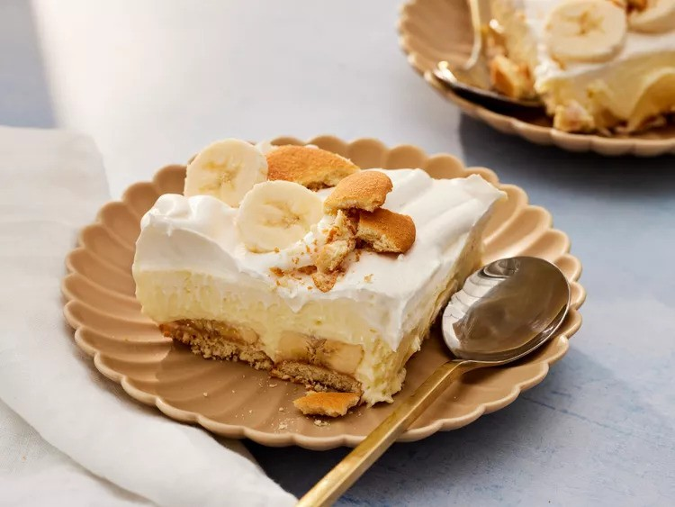

Banana Pudding

Banana meets pudding!
A popular dish in the South, banana pudding is made of layers of sliced bananas, vanilla custard or pudding, and vanilla wafers.
Its inception can be traced to the United States in the late 1800s, wherein American and English custard-based delicacies were combined.
Its delicious flavor and easy preparation, together with its simple components of bananas, custard, and cookies, rapidly made it a staple in Southern homes and celebrations.
Variations developed over time, like topping the layers with meringue or whipped cream to increase the texture and richness.
Thanks to its creamy texture, sweet banana taste, and nostalgic, soothing appeal derived from American cooking heritage, banana pudding is still a beloved dish in the nation today!
Ingredients
- 1 (8 ounce) package cream cheese, at room temperature
- 1 (14 ounce) can sweetened condensed milk
- 1 (5 ounce) package instant vanilla pudding mix
- 3 cups cold skim milk
- 1 teaspoon vanilla extract
- 1 (8 ounce) container frozen whipped topping, thawed
- ½ (12 ounce) package vanilla wafers
- 4 bananas, sliced
Steps to make this delicious pudding
- Gather all ingredients.
- Beat cream cheese in a large bowl until fluffy. Beat in condensed milk, then pudding mix. Gradually mix in cold milk until smooth, followed by vanilla.
- Fold in 1/2 of the whipped topping.
- Line the bottom of a 9x13-inch dish with vanilla wafers.
- Arrange sliced bananas evenly on top.
- Cover with pudding mixture.
- Top with remaining whipped topping.
- Cover and chill in the refrigerator for at least 3 hours before serving.